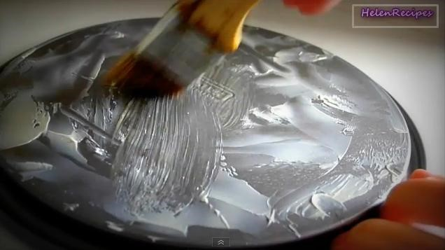

In a small saucepan under low heat, dissolve the sugar and salt with the coconut milk. Let cool to room temperature.
Grease only the bottom of the baking pan. Preheat oven AND the baking pan to 175°C/ 350°F.

Crack 6 eggs in a mixing bowl. Use a fork or a whisk to stir the eggs. Do not beat the eggs or over-stir; just stir enough to homogenize the whites and yolks. The tip of the whisk should always be touching the bottom of the bowl. This is to avoid creating foam.
Add the coconut mixture to the egg mixture and give it a few stirs. Sift the starch and baking powder into the mixture.Stir the mixture in one direction until smooth. Add pandan extract and vanilla.
Use a strainer to strain the mixture into the heated pan.
Place the cake pan right in the middle of the oven. Bake at 175°C/ 350°F for about 45 minutes, until golden. To test for doneness, insert a toothpick in the center of a cake. If the toothpick comes out clean, the cake is done.
Let the cake cool upside down on a rack. The cake tastes the best freshly out of the oven. It can be stored for 1-2 days by wrapping in plastic wrap. If you serve it on the next day, microwave for about 15 seconds.